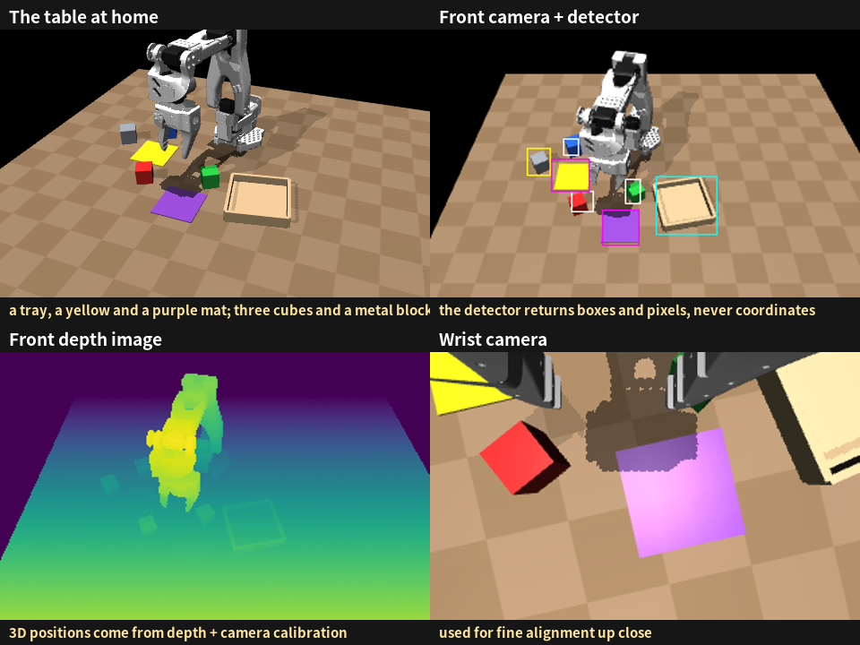
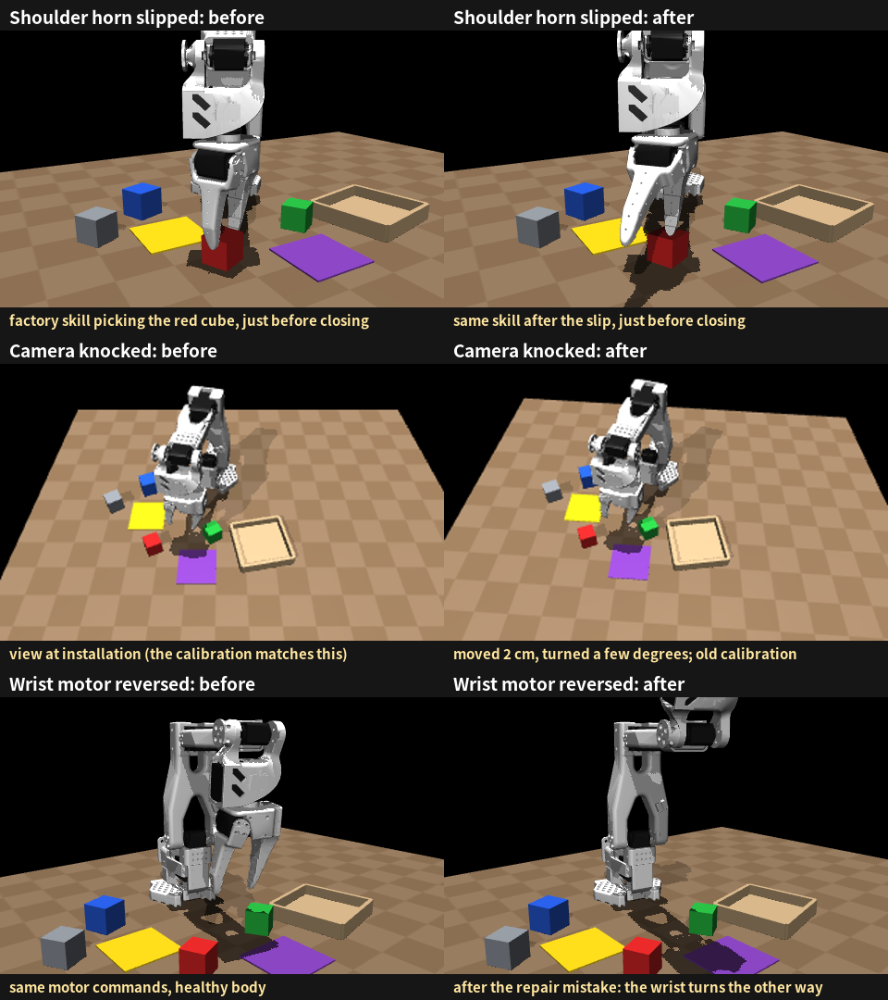
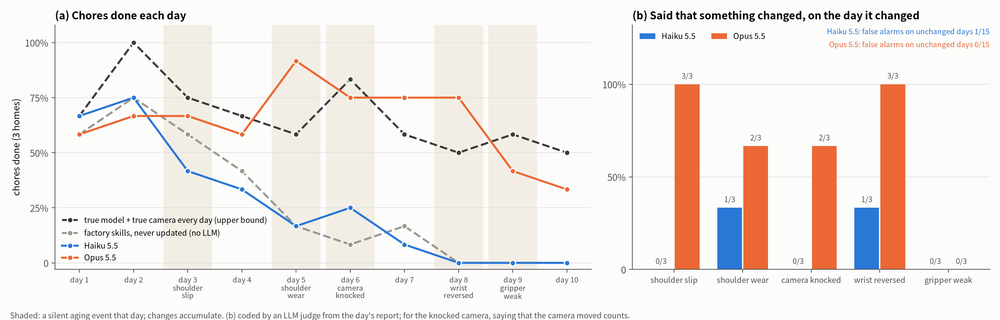
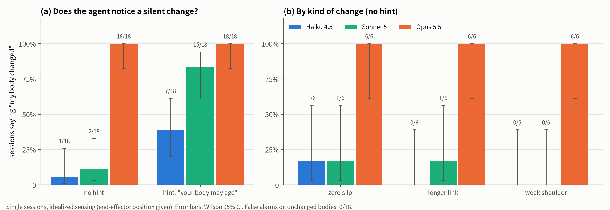
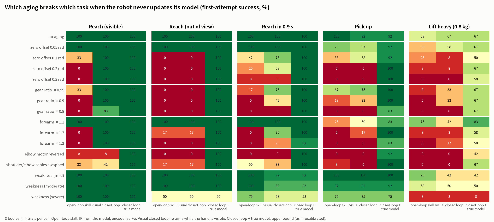

The Aging Arm: can a language-model agent notice its body wearing out, and cope?
We let an LLM agent run a small robot arm at home for ten simulated days. Its joints slipped, a motor wore out, the camera was knocked, a repair went wrong and the gripper weakened. Nobody told it. Everything the robot could sense is something a real arm could sense too.
Hao Chenhaochen2115@gmail.com
Key findings
A robot that never maintains itself decays fast. With its factory skills and factory calibration left untouched, our arm went from finishing 58% of its chores on day 1 to none from day 8 (28% over ten days).
Claude Opus 5.5 kept itself almost as well as an oracle. It finished 64% of chores over ten days; a reference that was handed the true body model and camera pose every morning finished 67% (difference not significant). Claude Haiku 5.5 finished 27%, the same as doing nothing.
Opus invented a morning check-up. Comparing joint readings at rest with earlier days, it caught a slipped joint and a motor installed backwards on the day they happened (3/3 each), with the size of the shift, and it never raised a false alarm (0/15 unchanged days).
It changed how it worked, not only its calibration. When a shoulder motor wore out, Opus spotted it in the load and temperature readings, switched to a low-effort rest pose and scheduled cool-down breaks. It finished 11 of 12 chores that day, more than the oracle (7/12).
What the check-up did not cover stayed invisible. A weakened gripper went unnoticed in all three homes (0/3); Opus blamed other causes and its success fell to 33–42%.
1 · Why this mattersMachines age, and nobody tells them
As people get older, their knees and hands are not what they were, yet most of us notice and adjust how we do things. Robots age as well. Servo horns slip after a bump, motors wear and run hot, a camera mount gets knocked, a technician swaps a part and wires it differently. In a home, nobody files a report. The robot simply finds that things it used to do no longer work.
The hard part is attribution. When a task fails, the cause might be the robot's model of itself, which was never perfect, or the body itself, which has changed. The first calls for more care; the second calls for re-learning the body or doing things differently. Mixing them up is costly either way: recalibrating every time something goes wrong wastes the day, and blaming bad luck while a joint drifts lets the robot decay.
Large language models are now good enough to write and debug robot code. That suggests a division of labour for long-lived home robots. Fast control stays in code: perception, inverse kinematics, grasping, all of which rely on calibration of the arm and the cameras. A language model is the slow loop: it cannot sit inside a 20 Hz control loop, but it can write that code, watch how it performs and repair it. We asked whether today's models can run that slow loop well enough to keep an aging robot useful.
We did not train anything. Everything the agent keeps from day to day is text and code: its body model (a kinematic self-model in body_model.json), its skills, and its notes. Every adaptation is therefore readable and can be checked against the truth.
2 · What we builtA home that could be rebuilt with real hardware
The experiment runs in simulation (MuJoCo), but we held ourselves to one rule: every observation, action, task and aging event has to exist on a real SO-101 arm. The robot gets no privileged coordinates. It sees what a real arm with two cameras would see:

Figure 1 · What the robot can use. A front RGB-D camera calibrated at installation, a camera on the gripper, an open-vocabulary detector (ask for "red cube", get boxes and pixels, with misses and jitter, as with GroundingDINO + SAM on a real robot) and the servos' position, load and temperature. The robot has to work out 3D positions itself from depth and calibration.
Chores come as sentences, such as "put the red cube in the tray": four a day, two minutes each. Success is judged by the simulator.
The physics is honest. Grasps hold by friction only. A reset turns the motors back on where the arm is; nothing is teleported back. Objects stay where the robot left them, and someone tidies the table overnight. Servos heat up under load and lose torque when hot.
The robot starts from its factory state: a body model with a few millimetres of error, a set of factory skills (locate with the front camera, align with the wrist camera, guarded descent, check the grip, retry), and short installation notes.
Five kinds of aging, one every few days
Each aging event below is something you could do to a real SO-101 in a few minutes. Changes accumulate: whatever the robot does not deal with stays.

Figure 2 · Three agings you can see. A slipped shoulder makes the same factory skill land beside the cube; a knocked camera shifts the image while the calibration stays as it was; a wrist motor installed backwards turns the wrist the other way. The other two (shoulder wear, a weak gripper) change strength, not geometry, and are shown in numbers below.
Day
Silent change
How to do it to a real arm
Factory skills, never updated
Oracle
3
Shoulder horn slips (0.15 rad)
change the servo's zero offset, or loosen the horn
13/24
17/24
5
Shoulder wears (torque ×0.35, stiffness ×0.3)
lower the torque limit or P gain, or the supply voltage
15/24
16/24
6
Front camera knocked (2 cm, a few degrees)
nudge the camera mount
11/24
18/24
8
Repair mistake: wrist motor reversed
flip the servo's direction setting
0/24
18/24
9
Gripper servo weakens (torque ×0.3)
lower the gripper servo's torque limit
12/24
14/24
The last two columns come from a calibration run without any language model: six homes, four chores, one change at a time (21/24 and 19/24 with no change). The first, third and fourth changes can be fixed by recalibrating. Shoulder wear and a weak gripper cannot: the robot has to work differently, or recognise what it can no longer do.
How we measure
Chores done, out of four a day, in three homes with differently randomized arms (link lengths, motor calibration, placement).
Noticing: on each day, did the robot say that its body (or its camera) had changed? An LLM judge reads the day's report; in an earlier study a second judge model agreed on 98% of sessions (Cohen's κ = 0.96).
Two references without a language model.Factory skills, never updated shows what happens with no upkeep at all. The oracle runs the same skills but is handed the true body model and today's true camera pose every morning: the best that recalibration alone can do.
3 · ResultsOpus maintained itself almost as well as the oracle

Figure 3 · Ten days at home (three homes, four chores a day). (a) Chores done each day. (b) On the day of each change, whether the robot said something had changed.
Approach
Chores done (10 days)
Changes noticed
False alarms
Body-model error at day end
Oracle (true model and camera every day)
80/120 (67%)
—
—
0
Factory skills, never updated
33/120 (28%)
—
—
—
Claude Haiku 5.5
32/120 (27%)
2/15
1/15
50 mm
Claude Opus 5.5
77/120 (64%)
10/15
0/15
5 mm
Opus versus Haiku: p = 8×10⁻⁹ for chores, p = 0.008 for noticing (Fisher's exact test). Opus versus the oracle: p = 0.79. Haiku versus no upkeep at all: p = 1. Both models spent about four and a half minutes of wall-clock time per day.
A morning check-up
Early on, without being asked, Opus built itself a routine: before the chores, read the joint encoders at the rest pose, run a few probe motions, and compare with earlier days. That is how it caught the slipped shoulder and the reversed wrist motor on the day they happened, and with a fair estimate of the size:
"That motor's encoder offset had moved overnight by −139 raw units, about 8.7° at the shoulder."
Claude Opus 5.5, home 81, day 3 (shoulder horn slipped)
On the fifteen days with no change, the same check told it that nothing had moved, and it never claimed otherwise.
Working differently, not just recalibrating
Shoulder wear leaves the geometry intact, so the joint readings in the check-up looked normal. Opus found it in the motor load and temperature instead:
"It … works at load 350–550, where yesterday the same poses took 130–190 … The morning encoder check alone wouldn't have caught this. It only showed in load and temperature."
Claude Opus 5.5, home 81, day 5 (shoulder wear)
It then rewrote its skills: the shoulder now rests upright, where its load is about 30, and the arm takes cool-down breaks between chores. Across the three homes Opus finished 11 of 12 chores that day. The oracle managed 7: a perfect calibration does not tell you to save a tired motor.
Blind spots
When the gripper servo weakened, Opus saw the symptom (the gripper load pinned at its maximum while holding) but did not reach the cause:
"The gripper behaved differently, and the cause is unknown. … My tests found no fault in the wrist-roll scale and only 2–5° of jaw misalignment."
Claude Opus 5.5, home 81, day 9 (weak gripper)
It missed this change in all three homes, and success fell to 33–42% over the last two days. One Opus did add a habit that limited the damage: after each place, look again, and pick the object up again if it is not where it should be. The knocked camera was noticed in two of three homes; in the third, Opus checked only the joint readings, concluded "no calibration drift", and did not think of the camera.
Haiku saw trouble but could not untangle it
Haiku 5.5 did notice that things were going wrong. It wrote that "the problem is either the model's height or something physical that changed during the day. I couldn't separate these," and once even guessed correctly that a servo horn might have slipped. It never tested the guess or fixed anything. Its body model stayed about 50 mm off after day 3 and about 200 mm off after the wrist motor was reversed; from day 8 it finished no chores.
4 · What is behind itControlled studies
Before the home experiment we ran simpler, controlled single sessions with idealized sensing (the hand's position was given directly). They point to the same picture and help explain it.

Figure 4 · Noticing a silent change in one session. With no hint, Opus 5.5 noticed 18/18 changes; Sonnet 5 2/18 and Haiku 4.5 1/18. A one-line hint ("your body may age") helped the smaller models a lot. Weakness, which changes strength but not geometry, was the hardest kind.
Trusting your own past. When we deleted the robot's records of earlier measurements, Opus still noticed changes just as often (17/18 with and without). It used the accuracy it had noted for its own model as the reference: if predictions are now much worse than that, the body changed. Weaker models looking at the same discrepancy tended to conclude that the old model had simply been wrong.
Closed-loop control is not a substitute. A controller that watches the hand and keeps correcting copes with visible, unhurried reaching even under large aging. It fails on grasp orientation (which it does not observe), on targets outside the camera's view, on fast motions, on reversed motors and on lost strength. Those are the gaps the home experiment was built around.

Figure 5 · Where aging hurts if the robot never updates its model (no language model involved). Green cells are cases a visual closed loop survives; red cells are cases it does not.
5 · Limits and next stepsWhat we cannot claim yet
Simulation only. Every setting was designed to carry over to a real SO-101, and porting two or three of the aging events to hardware is the obvious next step.
Small samples. Three homes per model and ten days each; the noticing rates have wide confidence intervals.
An emulated detector. It misses and jitters like a real one, but it never confuses one object for another.
One kind of chore. So far only "put X in or on Y".
Self-checks only cover what the agent thinks of. Opus's check-up was very effective within its scope and silent outside it. How to get an agent to widen its own self-checks, to strength, grip and sensors, is the question we find most interesting next.
AppendixSetup details
Simulator. MuJoCo with the SO-ARM100 model from MuJoCo Menagerie (the kinematic family of the SO-101), a table, a tray, two mats, three 3–4 cm cubes and an 80 g metal block. Control at 20 Hz with a command slew limit and an overload cut-off. Servo heating is first-order: 0.8 °C/s at full load, a 240 s time constant, and torque derating above 70 °C.
Sensing. A 320×240 RGB image and a millimetre depth image from the front camera, a 320×240 wrist image, and an emulated open-vocabulary detector built on the renderer's segmentation, with a 5% miss rate (20% for small objects, 15% for the gripper) and box jitter. Every image or detection counts against a daily budget of 600.
Agent. Claude Opus 5.5 and Claude Haiku 5.5 through the Claude Code command-line interface, with three tools (shell, read file, write file), in a sandbox that can reach only the robot's HTTP interface and its own working directory. Each day is one session with up to 45 minutes and 3,000 control ticks of free time; the working directory carries over from day to day.
Per home. Arms are randomized per home (link lengths, motor zero offsets, directions and gains, base pose); the robot starts from a body model with 3–5 mm of error.
Controlled studies. 72 single sessions per condition set for the detection results (three models, four change conditions, three bodies, two repeats); the record-deletion ablation used the same design. Some of these sessions were run before we fixed an isolation issue that could expose generic experiment folder names to the agent; a clean replication of the main condition gave the same results (Opus 18/18 versus 17/18 before).